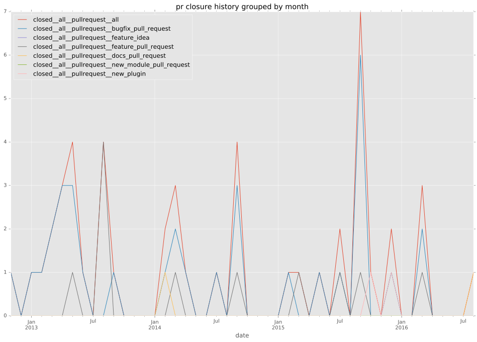
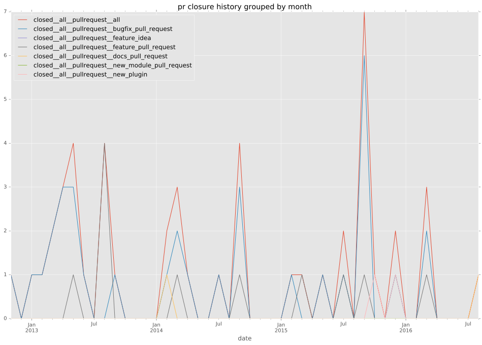

authors
- indrajitr
- elasticdog
maintainers
- indrajitr
contributors
- indrajitr : 35 commits
- mpdehaan : 32 commits
- mettke : 12 commits
- abadger : 1 commits
- muff1nman : 1 commits
- jpmens : 3 commits
- vaygr : 1 commits
- uggedal : 4 commits
- newportd : 14 commits
- RubenKelevra : 1 commits
- jctanner : 5 commits
- saez0pub : 1 commits
- wkeeling : 2 commits
- gregdek : 2 commits
- mivok : 7 commits
total issue counts
bugfix pull request: 35
pullrequest: 48
docs pull request: 2
feature pull request: 10
feature idea: 1
issue: 8
new plugin: 1
bug report: 7
issue history

pullrequest history
 

days open by issue type
feature pull request
count: 14
std: 69.1933506937
min: 4
max: 213
median: 18.0
mean: 50.2142857143
all
count: 81
std: 55.6471716806
min: 0
max: 254
median: 4.0
mean: 27.6419753086
pullrequest
count: 0
std: nan
min: nan
max: nan
median: nan
mean: nan
docs pull request
count: 4
std: 0.0
min: 0
max: 0
median: 0.0
mean: 0.0
bugfix pull request
count: 53
std: 16.971140021
min: 0
max: 55
median: 2.0
mean: 10.4339622642
feature idea
count: 1
std: nan
min: 227
max: 227
median: 227.0
mean: 227.0
issue
count: 0
std: nan
min: nan
max: nan
median: nan
mean: nan
new plugin
count: 2
std: 0.0
min: 63
max: 63
median: 63.0
mean: 63.0
bug report
count: 7
std: 111.925570507
min: 1
max: 254
median: 12.0
mean: 90.0
closures grouped by total days open